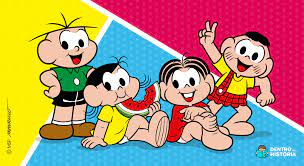

History of Mônica´s Gang
During the first comic strips published by Mauricio, in 1959, the main characters were Franjinha and Bidu. Soon after, other names emerged that are well known to the public to this day. Despite being extremely beloved, readers began to complain about the lack of girls in the stories. This is how the comic artist decided to be inspired by the personality of his second daughter, Mônica Sousa, and created a character with the same name.
Who was Maurício de Souza?
Mauricio de Sousa was born on October 27, 1935, in Santa Isabel (SP). The designer and entrepreneur is famous for the creation of Turma da Mônica and other characters. He is a member of the Academia Paulista de Letters, where he occupies chair number 24. Designer Mauricio de Sousa, creator of Turma da Monica, was considered by the Portraits of Reading in Brazil survey, the 6th most remembered writer by Brazilians.